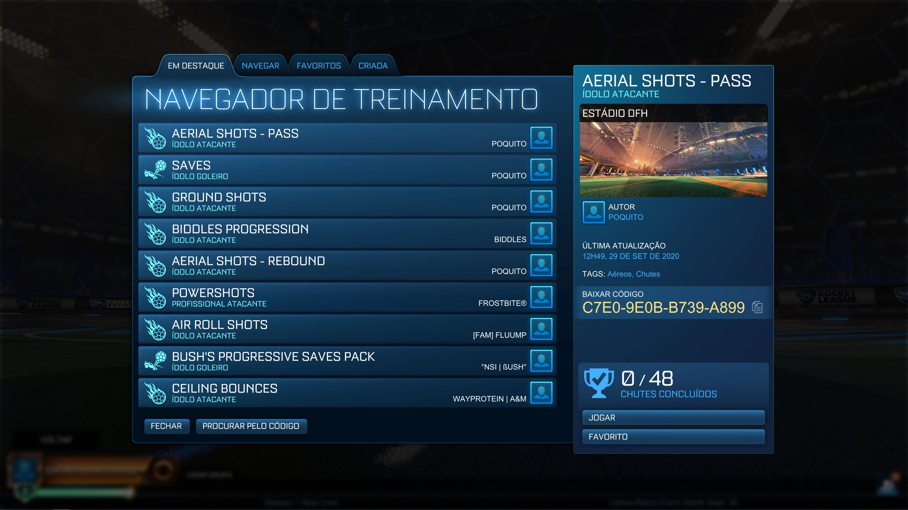

Como Jogar Rocket League?
5 dicas para você ganhar sempre no Rocket League!
1- Jogue com Amigos

Imagem autoral dos desenvolvedores dentro do jogo. — Foto: Ilustração
Jogar com os amigos com toda a certeza falicitara a conquista
da partida, a comunicação é essencial para que você consiga executar
jogadas que podem acabar em gols por isso jogar com amigos além de ser
mais divertido é mais eficaz!
2- A Defesa

Imagem ilustrativa de uma defesa no Rocket League — Foto: Ilustração
Ter defesa é essencial para poder atacar, geralmente em elos mais baixos
jogadores só pensam em atacar e em qualquer contra ataque tomam vários gols
você terá que ser um bom defensor assim como tem que ser um bom atacante.
3- Treinar

Imagem do catálogo de treino do Rocket League — Foto: Ilustração
No Rocket você tem a possibilidade de treinar em várias difculdades e
tipos detreinos como por exemplo treinos de ataque, de voo e também treinos
de defesa, assim como os mapas criados pelos próprios jogadores que por sua
vez apresentam uma dificuldade maior do que os próprios treinos inseridos pelo
game.
4- Saiba utilizar o nitro
Gift de gol em partida da RLCS — Foto: Ilustração
O nitro é um dos componentes mais importantes em Rocket League, o gerenciamento
do nitro é essencial para fazer jogadas que levem ao gol, não gaste atoa sem ter nenhuma
estratégia.
5- Não corra atrás da bola

Imagem ilustrativa de carros indo atrás da bola no Rocket League — Foto: Ilustração
Correr desesperadamente atrás da bola sem nem pensar é pedir para tomar um gol, prova disso
é jogar o modo 1v1 que a qualquer deslize você pode tomar um gol, acompanhe a movimentação da bola
no jogo e procure se adiantar em relação a seus oponentes, pensando estrategicamente antes de sair correndo.
Adianto que não existe 1 tipo de abordagem para se utilizar, mas sempre é bom ter calma para assim fazer o
melhor para sua equipe.
Desenvolvedores: Luis Felippe & Kauê Ronald
O site abrange conteúdos relacionados ao jogo Rocket League, criado pela Psyonix, tal conteúdo foi escolhido por ambos
os desenvolvedores, pois os mesmos possuem conhecimento e jogam o jogo frequentemente. O intuito desse site é trazer
informações sobre o jogo e aplicar os conhecimentos adquiridos na disciplina de Linguagens de Marcação.